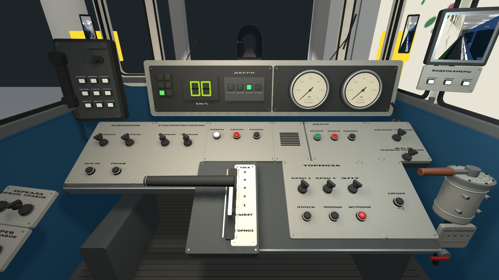
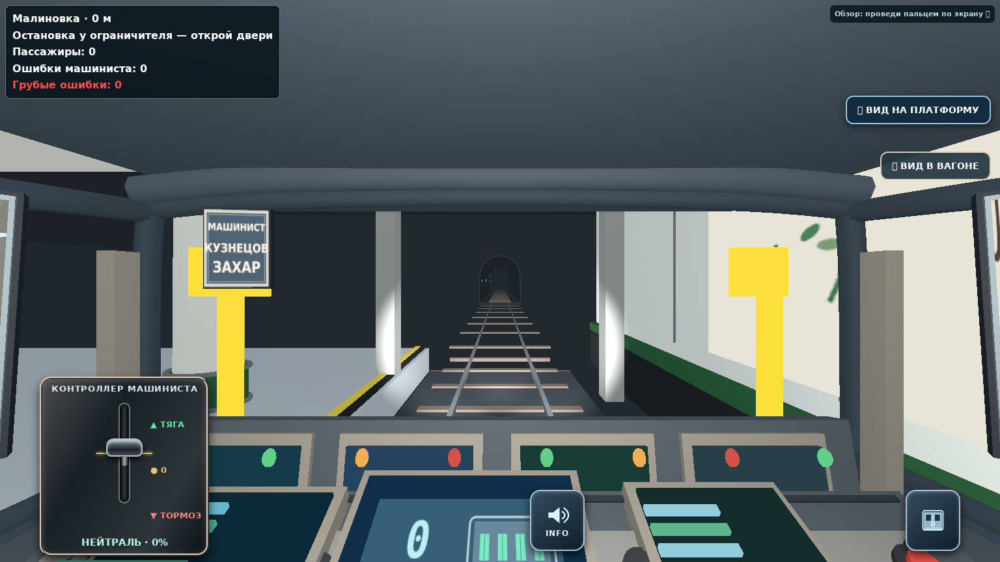
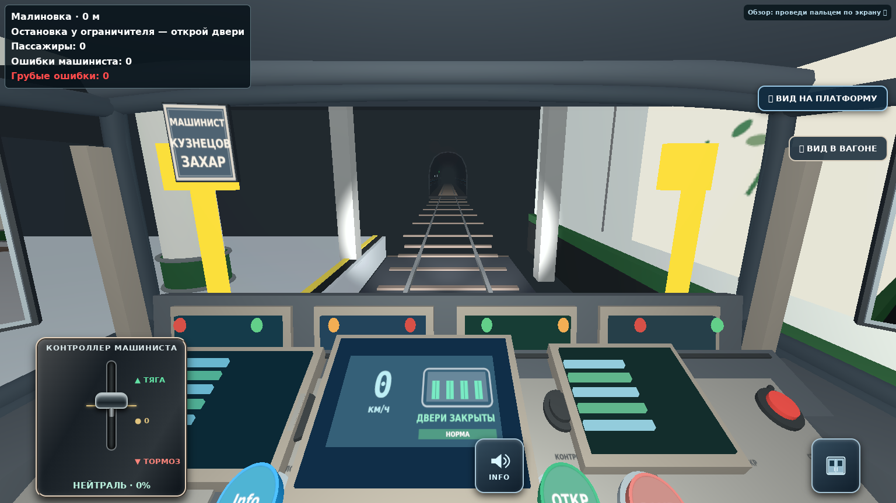

81-717 · кабина cab-r1
Ветка cab-development


Сохранены трёхоконная конструкция, секционный металлический пульт, цифровая скорость, два круглых электрических прибора, центральный контроллер, радиоблок и правый тормозной кран. Автоматическая проверка сравнивает 14 точек расположения; она дополняет визуальную оценку и не является оценкой фотореализма.
Спидометр, двери, рычаги, информатор, свет, зеркала и поддерживаемые команды связаны с игрой. Электрические приборы помечены «НЕТ ДАННЫХ». Пневматические магистрали, АРС, реверс и автоведение в исходной игре не моделируются; соответствующие ограничения указаны в таблице управления.
Исходная кабина до модернизации

